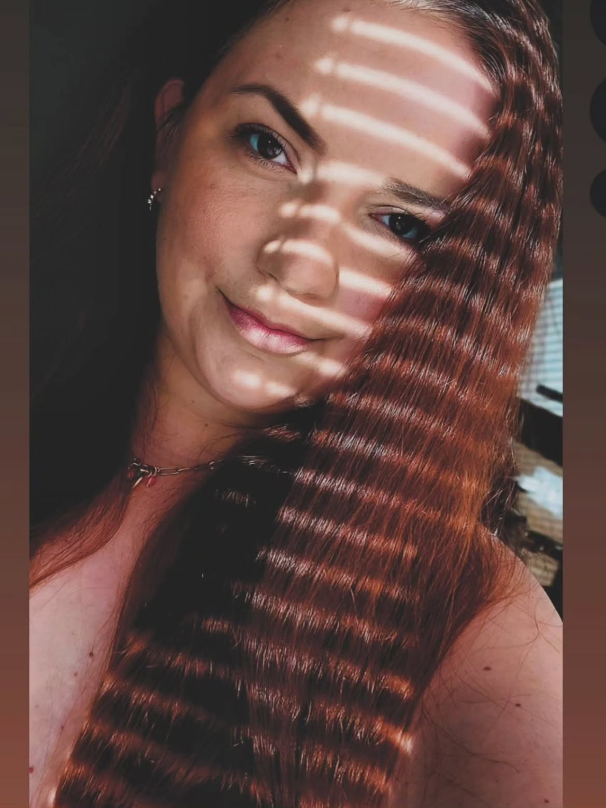

Lucie: Holka z Moravy, která žije naplno

Lucie je důkazem, že i v dnešní uspěchané době lze žít tak, jak se člověk skutečně cítí. Miluje zážitky, svůj klid, cestování a chvíle s lidmi, které má ráda.
Na první pohled možná působí jako holka, která má všechno přesně nalajnované. Realita je ale trochu jiná. Lucie si jde především vlastní cestou a málokdy dělá něco jen proto, že se to od ní očekává.
Má ráda svůj prostor, svůj klid a chvíle, kdy nemusí řešit vůbec nikoho. Zároveň ale miluje cestování, nové zážitky a chvíle, na které se vzpomíná ještě dlouho potom.
Raději zážitky než věci
Luxus pro ni nemusí znamenat drahou kabelku ani naleštěné auto. Mnohem důležitější je místo, kde se člověk cítí dobře, dobré jídlo, výlet, dovolená nebo prostě obyčejný večer, který se nečekaně povede.
Cestování jako únik od běžného života
Když má možnost někam vyrazit, dlouho se přemlouvat nemusí. Hory, jezera, města i obyčejné výlety po okolí mají jedno společné – na chvíli člověka vytáhnou z každodenního stereotypu.
A právě tyhle okamžiky jsou pro Lucii možná důležitější než samotná destinace. Dobrá společnost, trochu humoru a možnost na chvíli vypnout.
Život podle sebe
Kdo Lucii zná, ví, že přesvědčit ji k něčemu, co sama nechce, není úplně jednoduchý úkol. A možná právě v tom je její kouzlo. Nedělá věci proto, aby se zavděčila ostatním.
Někdy je společenská, někdy chce být sama. Někdy plánuje, jindy se rozhodne na poslední chvíli. A přesně tak jí to pravděpodobně vyhovuje nejvíc.